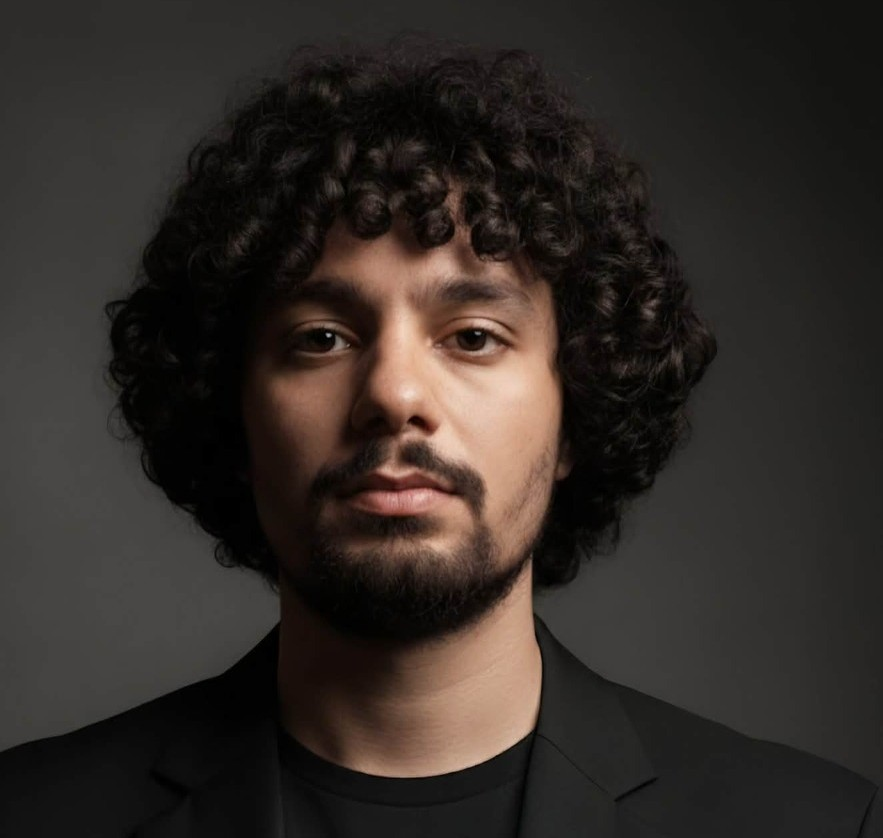
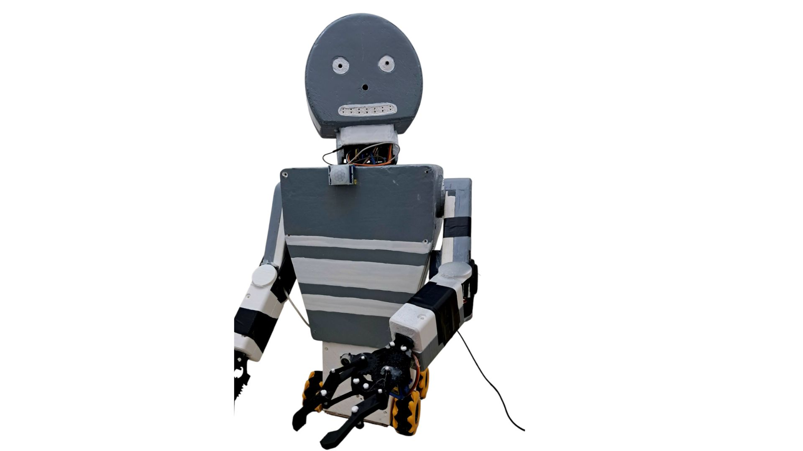
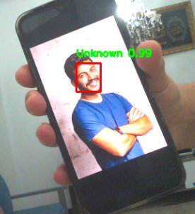
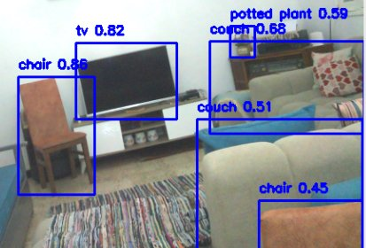
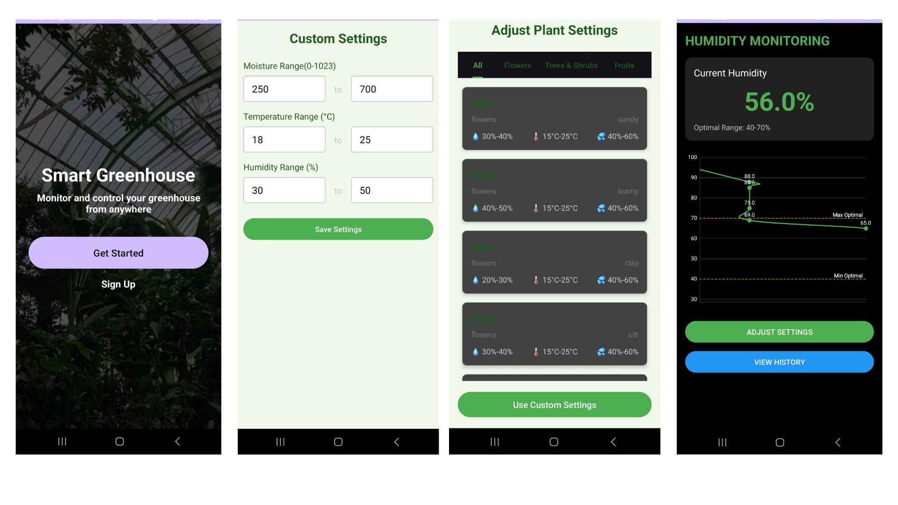
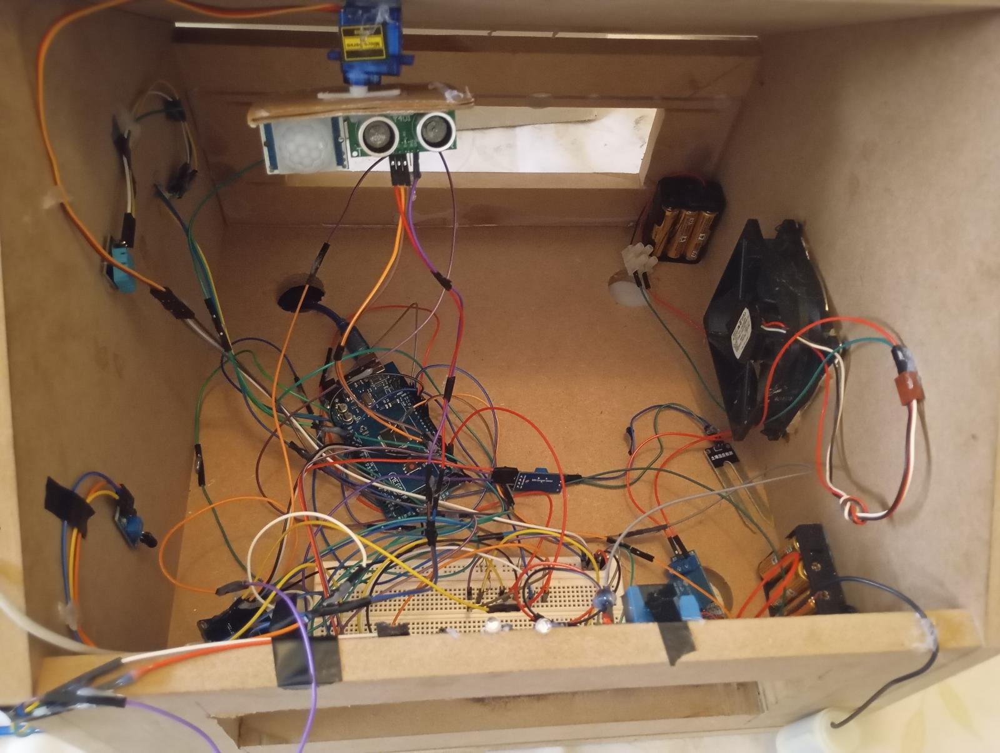

I build things that move, see, and think. My graduation project was a humanoid robot I made from scratch , 3D-printed body, wired by hand, running face recognition, object detection, voice interaction, and autonomous navigation.
I'm a computer engineering student at ESPRIT (Tunis), previously graduated with high honors in Software Engineering from the University of Gafsa. I work across the full depth of embedded systems: hardware wiring, real-time control, computer vision, and AI integration.
I'm also Vice Chair of Technical Activities at the IEEE IAS/IES/PES ESPRIT Joint Chapter, where I organize workshops and lead engineering projects for fellow students.
I'm looking for an internship where I can contribute to real embedded, IoT, or AI systems , not just observe them.




Designed and built entirely from scratch , 3D-printed body, full electronics wiring, and all software. The robot runs on a hybrid architecture: a Raspberry Pi 4 handles real-time voice recognition, motor control, and user interaction locally, while a PC server handles compute-heavy tasks like face recognition (FaceNet + MTCNN) and object detection (YOLOv5), communicating over WebSocket.
Capabilities: recognize registered users by face and greet them by name; detect unknown faces and auto-send SMS alerts via Infobip; identify objects in its field of view and describe them vocally; hold contextual AI conversations using the Cohere API with conversation history; respond to voice commands to move its arms, rotate its head, and navigate; read the user's class schedule from CSV and announce upcoming sessions.
9 functional test scenarios validated across all core capabilities: face recognition, object detection, voice interaction, AI conversation, schedule reading, and movement sequencing. Built entirely alone, managed with Scrum across 9 sprints.
Built as part of an IEEE technical team for the IAS TSYP Challenge , which we won. The system monitors industrial machines and workers in real time, detecting hazardous conditions and triggering automatic emergency shutdowns without human intervention.
Two-layer architecture: the ESP32 edge layer handles all sensor acquisition (current, vibration, temperature, gas, human presence), applies threshold logic locally, and controls a relay that physically cuts machine power when danger is detected. The Raspberry Pi gateway layer runs a Mosquitto MQTT broker, receives and filters data, runs the camera continuously, and executes AI-based worker safety analysis including fall detection , entirely on-device.
The relay cuts power in exactly three cases: electrical overcurrent, excessive vibration, and human presence in a restricted danger zone. Gas alerts trigger a warning but never stop the machine , a deliberate design decision to avoid unnecessary downtime.
My contribution: the full ESP32 edge layer , sensor drivers (DHT22, ACS712, ADXL345, HC-SR04, PIR, MQ gas), relay control logic, MQTT publishing, reconnect logic, and the timed loop structure.


Full IoT greenhouse system combining a mobile app, cloud database, and dual-controller hardware. The ESP8266 handles all sensor acquisition and pushes readings to Firebase in real time, while a separate Arduino controls the actuators (water pump, fan, and heater) based on commands and automated logic.
Uses two DHT11 sensors , one inside and one outside the greenhouse , to compare conditions and automatically decide whether to open windows, activate the fan, or turn on the heater. A key feature is plant-aware automation: the farmer selects a plant type from the app and the system loads that plant's ideal thresholds (based on soil type) from the database. Custom thresholds can also be entered manually.
The app also supports full manual control , direct pump, fan, and heater buttons that disable automatic mode. For safety, the system includes intrusion and fire-risk detection with instant push notifications.
Designed and deployed a complete enterprise network infrastructure from scratch for a fictional company with four departments: Web/Marketing, IT/Supervision, Database/Management, and Collaboration. The full stack covered IP addressing, routing, services, VMs, and monitoring , all simulated in GNS3 with VirtualBox VMs.
The backbone uses a fully-meshed OSPF topology built on Cisco 3745 routers with serial point-to-point links, eliminating the single point of failure of the initial star design. Each department runs its own router acting as a DHCP server and NAT gateway, keeping failures isolated. Departments are interconnected across separate physical machines via UDP tunnels through GNS3 Cloud Nodes.
The full VLSM plan allocated subnets from a 172.24.0.0/14 parent
block scaled to real-world host counts (8905 / 1465 / 489 / 165 PCs per
department), plus a public backbone using 203.0.113.0/24 with
/30 point-to-point links between all router pairs.
I owned the full Base de Données / Gestion department.
This included installing and hardening a MySQL server on a Ubuntu VM,
configuring remote access by binding to all interfaces
(bind-address = 0.0.0.0), opening port 3306 via UFW, and creating
the departement_db database with role-separated users
(admin with full privileges, user with DML only).
I then configured a static NAT redirect on the department router to expose MySQL on port 3306 via the router's public backbone address, letting clients in IT, Web, and NFS departments connect without direct access to the private LAN. Validated with live cross-department SQL queries (SELECT, INSERT) and Prometheus target checks.
The project also integrated a Prometheus + Grafana monitoring stack (Node Exporter on every machine, NAT port forwarding per department for port 9100), an Apache web server with an employee management page, and an NFS file-sharing service with automated server/client setup scripts. All services were validated end-to-end with cross-department connectivity tests.